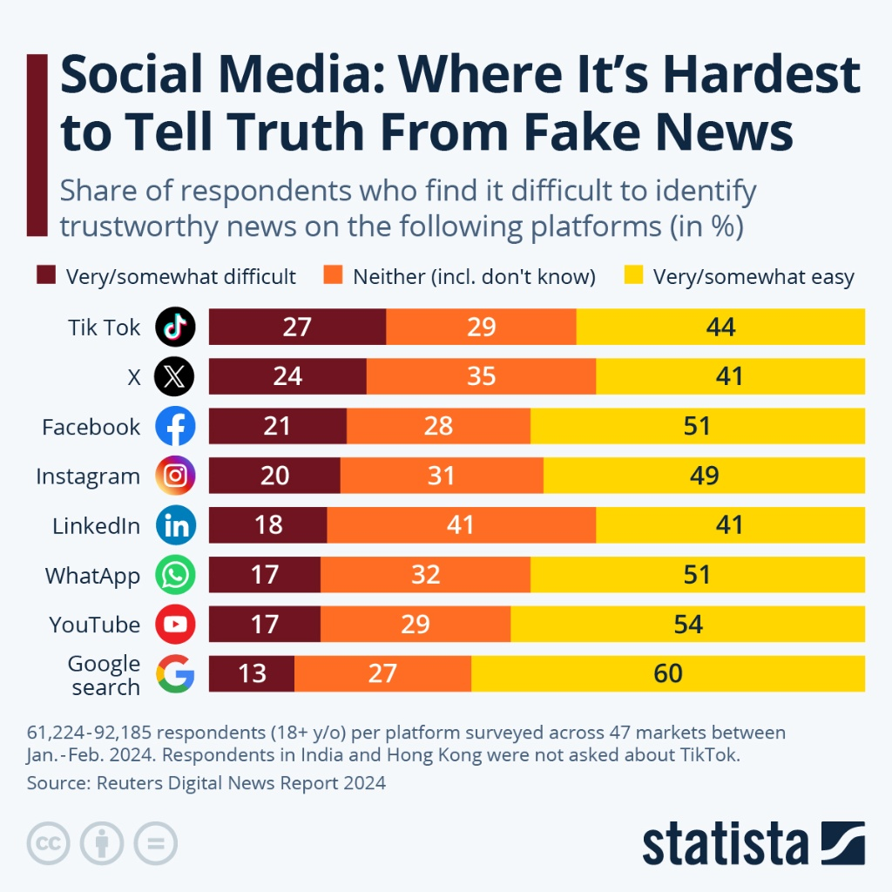

In the age of viral content and AI-generated media, relying on a single source is no longer enough. A video, image, or claim may appear convincing on its own, but without verification from other sources, its accuracy remains uncertain.
Comparing multiple sources allows users to cross-check information, identify inconsistencies, and build a more accurate understanding of what is real. This process transforms passive viewing into active investigation.
Why Comparing Sources Matters
No single source can provide a complete and unbiased view of an event. Different platforms, organizations, and individuals may present information differently based on perspective, intent, or available evidence.
By examining multiple sources, users can detect contradictions, confirm details, and avoid being misled by incomplete or manipulated content.
The more independent sources confirm the same information, the more reliable that information becomes.
How to Compare Sources Effectively
Comparing sources is not just about finding multiple posts—it requires careful evaluation of credibility, consistency, and context.
- Check if multiple reliable sources report the same event
- Compare dates, locations, and details for consistency
- Identify differences in wording, tone, or emphasis
- Evaluate the credibility of each source (official, verified, unknown)
- Look for original sources rather than reposts or summaries
Practical Examples
1. Same Event, Different Headlines
Different news outlets may report the same event but present it in different ways. Headlines can influence how the audience interprets the situation, even if the underlying facts are similar.

- Language can shape perception and bias
- Some headlines may exaggerate or simplify information
- Comparing multiple headlines reveals differences in framing
2. Social Media vs Verified Sources
Viral posts on social media often spread faster than verified information. Comparing them with trusted sources can reveal missing details, corrections, or completely false claims.

- Social media may lack verification processes
- Trusted sources provide more complete context
- Differences may highlight misinformation
3. Timeline Comparison Across Sources
Comparing timelines helps identify whether events are being reported accurately. Differences in time, sequence, or location may indicate errors or manipulation.

- Confirms sequence of events
- Reveals inconsistencies in reporting
- Helps reconstruct the full context
Common Pitfalls
While comparing sources is a powerful method, it can be misused if not done carefully.
- Relying on multiple sources that all originate from the same unverified claim
- Confusing repetition with confirmation
- Ignoring bias in sources that appear credible
- Focusing only on sources that support existing beliefs
Building Reliable Conclusions
The goal of comparing sources is not just to gather information, but to build a well-supported conclusion based on consistent and credible evidence.
When multiple independent and reliable sources align, confidence in the information increases. When they conflict, further investigation is required before drawing conclusions.
What We've Learned
Comparing multiple sources is a critical step in verifying digital media. It allows users to identify inconsistencies, detect bias, and confirm facts across different perspectives.
In a digital landscape filled with misinformation and AI-generated content, relying on a single source is risky. By actively comparing and evaluating multiple sources, users can make more informed and accurate judgments.
Multiple sources do not automatically mean accurate information. Always ensure the sources are credible, independent, and consistent before trusting them.